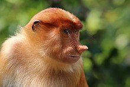

Proboscis monkeys generally live in groups composed of one adult male, some adult females and their offspring. All-male groups may also exist. Some individuals are solitary, mostly males. Monkey groups live in overlapping home ranges, with little territoriality, in a fission-fusion society, with groups gathering at sleeping sites as night falls. There exist bands which arise when groups come together and slip apart yet sometimes groups may join to mate and groom. Groups gather during the day and travel together, but individuals only groom and play with those in their own group. One-male groups consist of 9 to 19 individuals, while bands can consist of as many as 60 individuals. One-male groups typically consist of three to 12 individuals, but can contain more. Serious aggression is uncommon among the monkeys but minor aggression does occur

Reproduction
Females become sexually mature at the age of five years. They experience sexual swelling, which involves the genitals becoming pink or reddened. At one site, matings largely take place between February and November, while births occur between March and May. Copulations tend to last for half a minute. The male will grab the female by the ankles or torso and mount her from behind. Both sexes will encourage mating, but they are not always successful